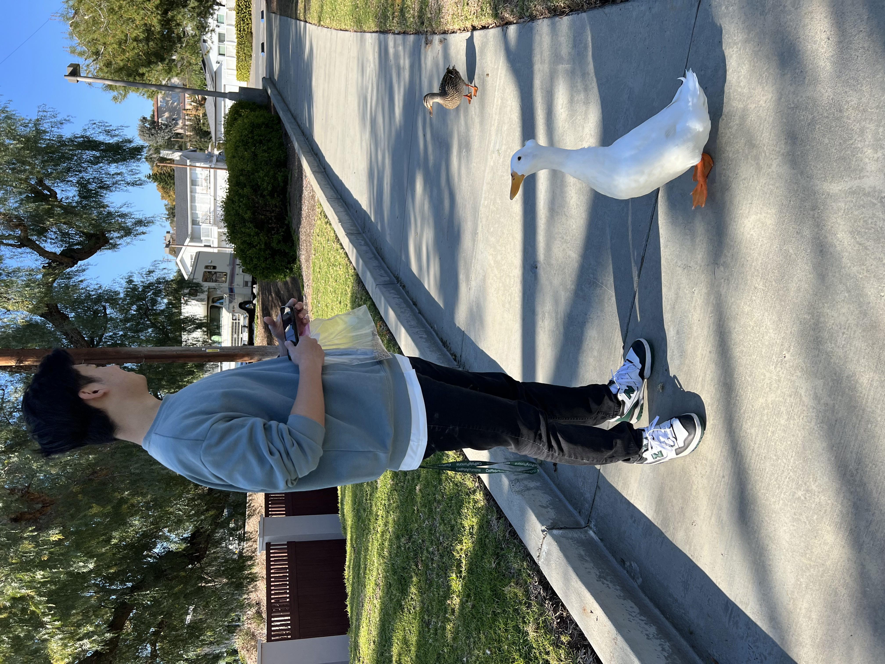
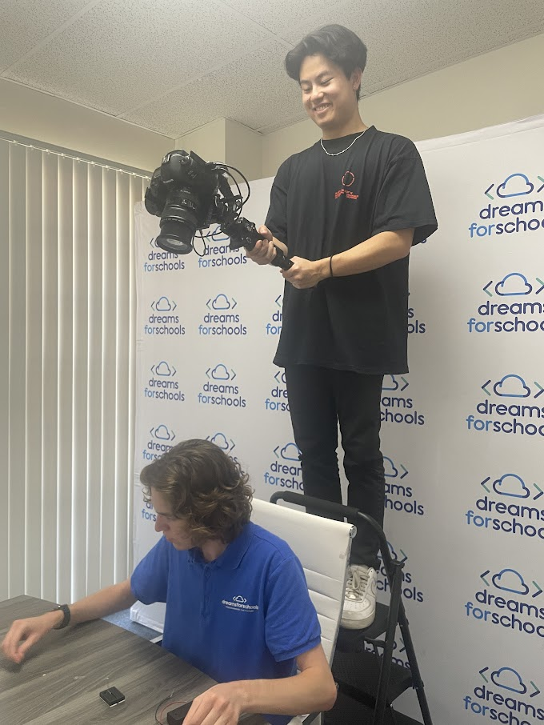
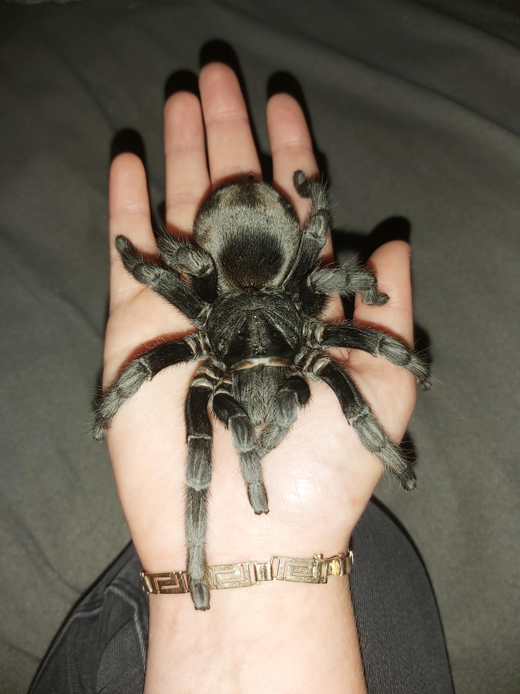
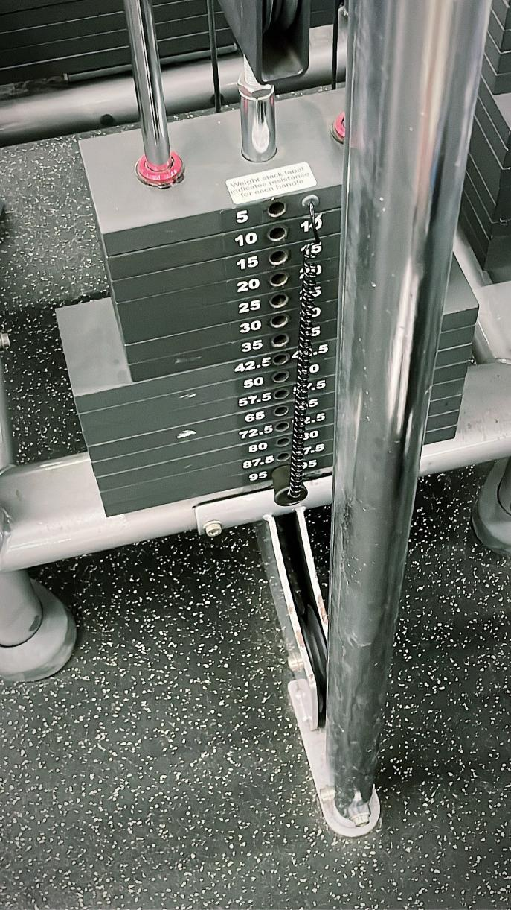
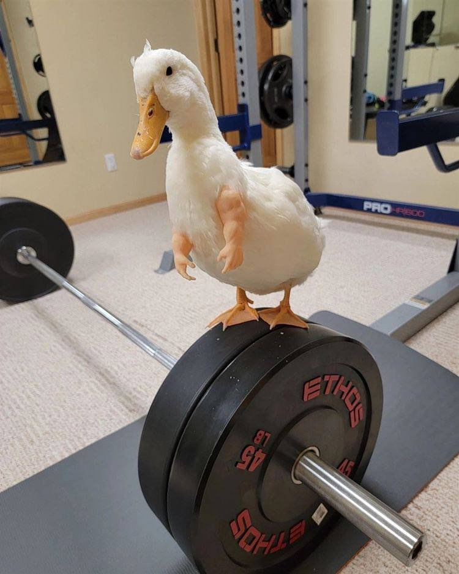
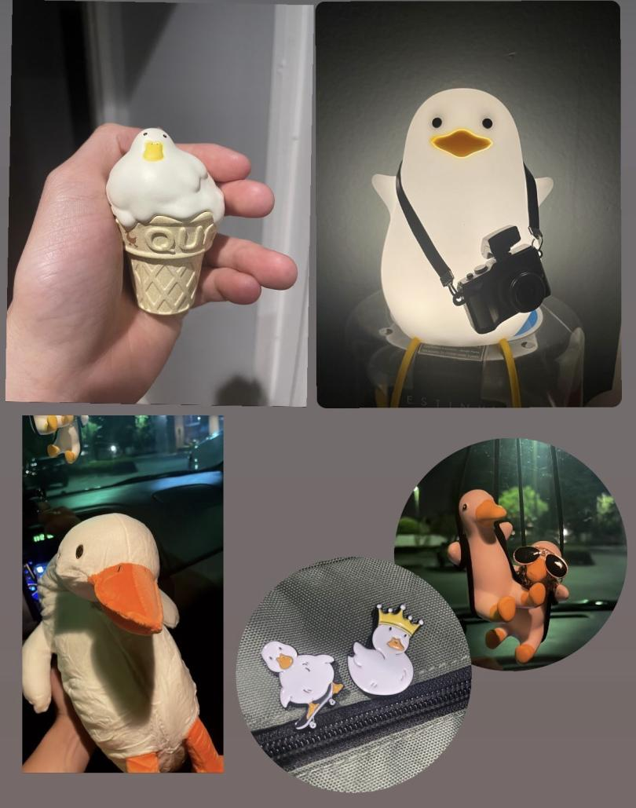

Hello my name is John!
I love to work and teach web development

Aside from web development, I also work as a freelance photographer and videographer.

I have a pet tarantula and I love snakes as well.


My other hobby is working out.

My favorite animal are ducks!
I have 326 photos of ducks for every situation 🦆

I am interested in learning Three.JS, a Javascript library that can create 3D websites